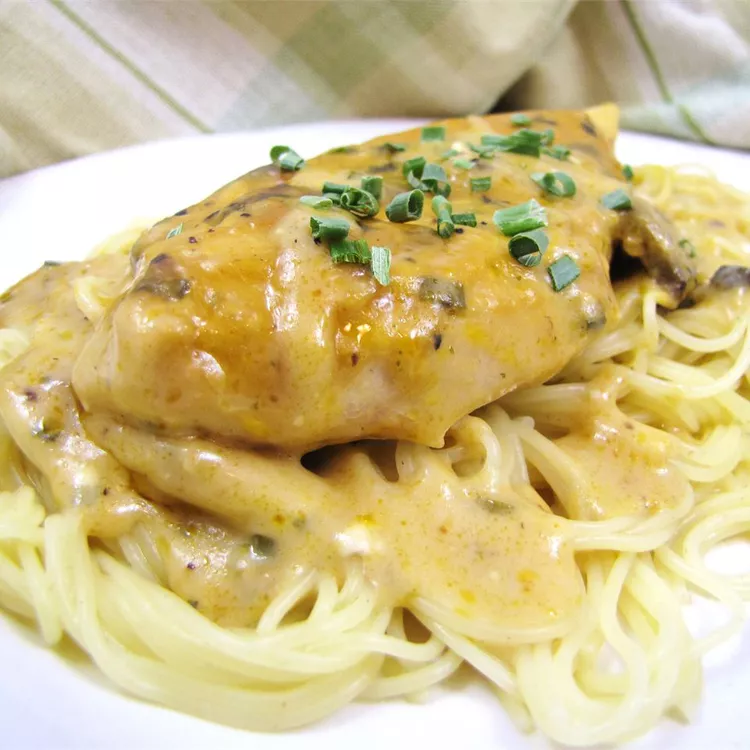

Creamy Golden Mushroom Chicken Angel Hair Pasta

Description
This family-favorite angel chicken recipe is full of flavor and easy to make with condensed soup and cream cheese. It's special enough to serve when you're entertaining guests. I usually double the recipe so we can have leftovers.
Ingredients
- 6 skinless, boneless chicken breast halves
- ¼ cup butter
- 1 (.7 ounce) package dry Italian-style salad dressing mix
- 1 (10.5 ounce) can condensed golden mushroom soup
- ½ cup white wine
- 4 ounces cream cheese with chives
- 1 (16 ounce) package angel hair pasta
Directions
Step 1
- Preheat the oven to 325 degrees F (165 degrees C). Arrange chicken breasts in a single layer in a 9x13-inch baking dish.
Step 2
- Melt butter in a large saucepan over low heat. Stir in dressing mix, then stir in condensed soup and wine. Add cream cheese; cook and stir, without boiling, until smooth and heated through. Pour over chicken.
Step 3
- Bake in the preheated oven until chicken is no longer pink in the center and the juices run clear, about 1 hour. An instant-read thermometer inserted into the center should read at least 165 degrees F (74 degrees C).
Step 4
- About 15 minutes before the chicken is finished, bring a large pot of lightly salted water to a rolling boil. Add angel hair pasta and cook, stirring occasionally, until tender yet firm to the bite, 4 to 5 minutes. Drain.
Step 5
- Serve chicken and sauce over pasta.